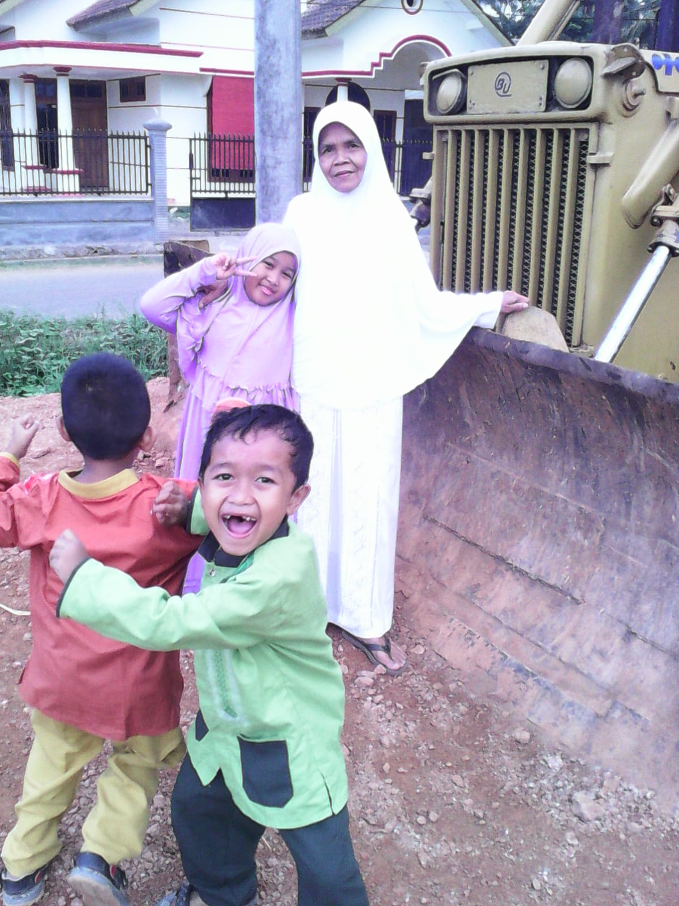
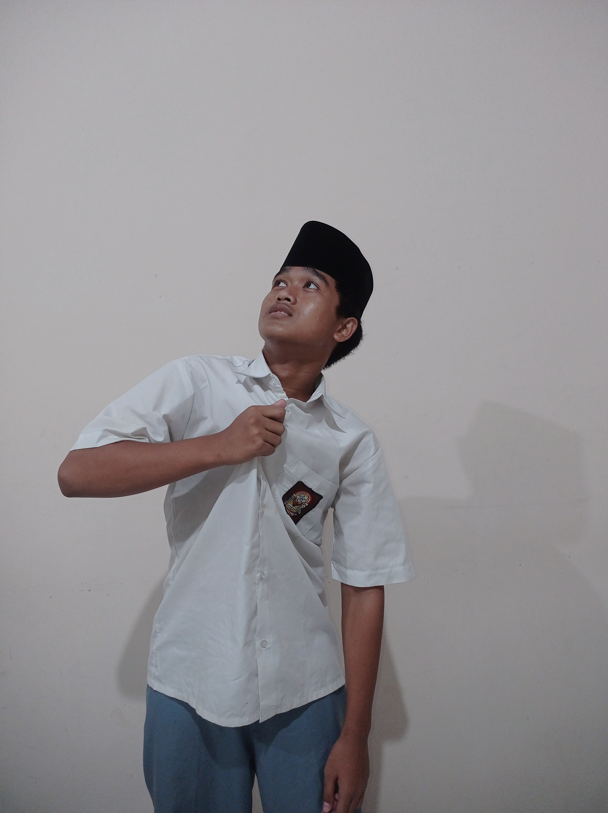

👶 KILAS BALIK MASA KECILKU 👶
Arahkan kursor mouse pada foto untuk menghentikan gerakan dan melihatnya lebih jelas.

📸 Memori Pertama
Baju Hijau Guyss!!!
• • •

🧸 Memori Kedua
FOTO SMA
"Waktu boleh berlalu dan kita tumbuh dewasa, tetapi kenangan indah masa kecil akan selalu tersimpan rapi."